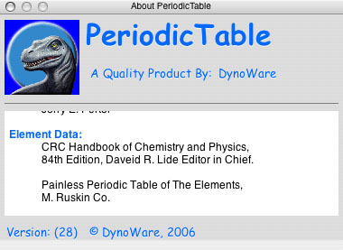

The About Panel can be accessed from the application's Menu by clicking on PrimaMateria --> About PrimaMateria
Moving the mouse over the scrolling credits area will cause it to stop scrolling, moving the mouse out of the credits area will cause the credits to start scrolling again.
About Panel
